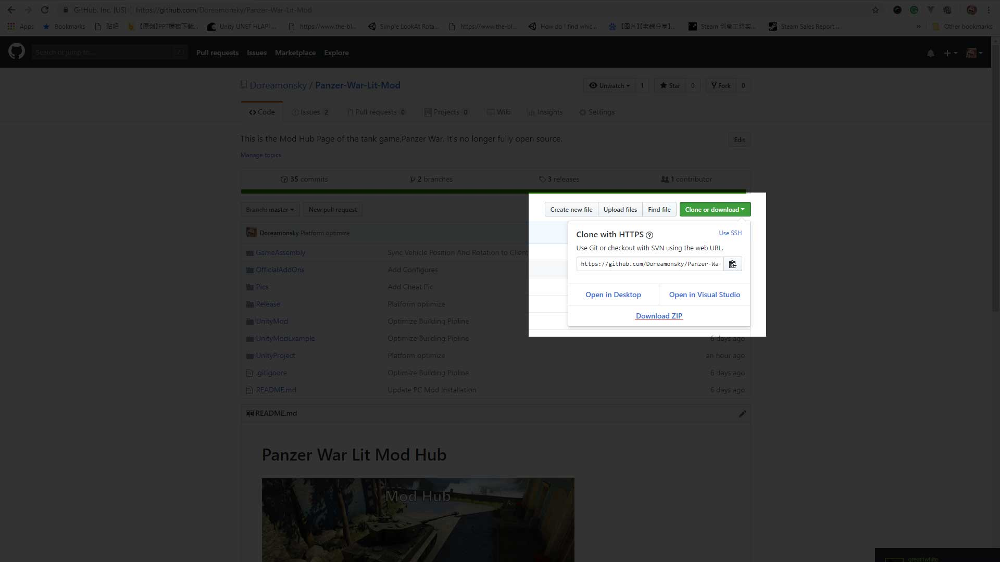
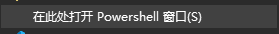
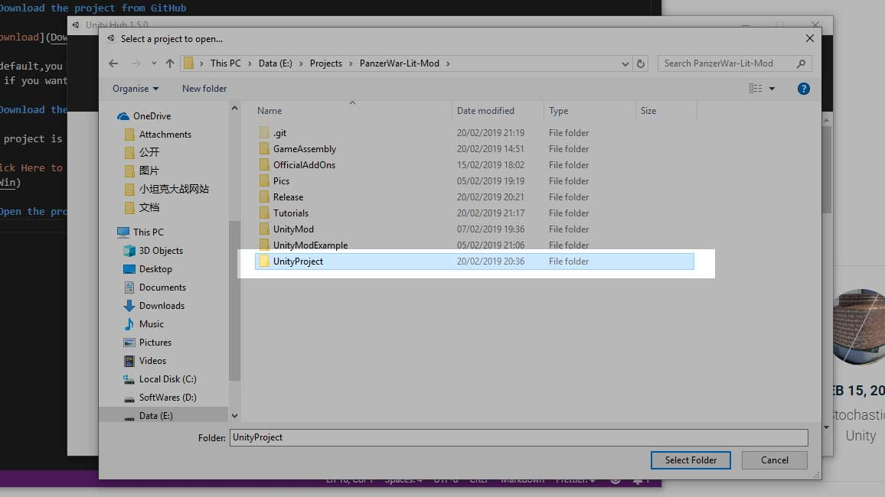
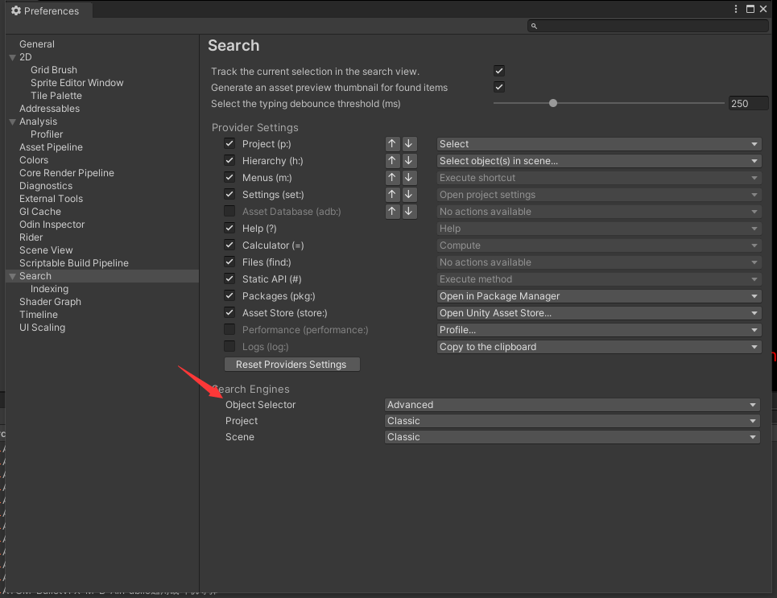
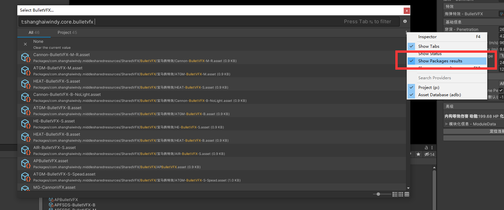
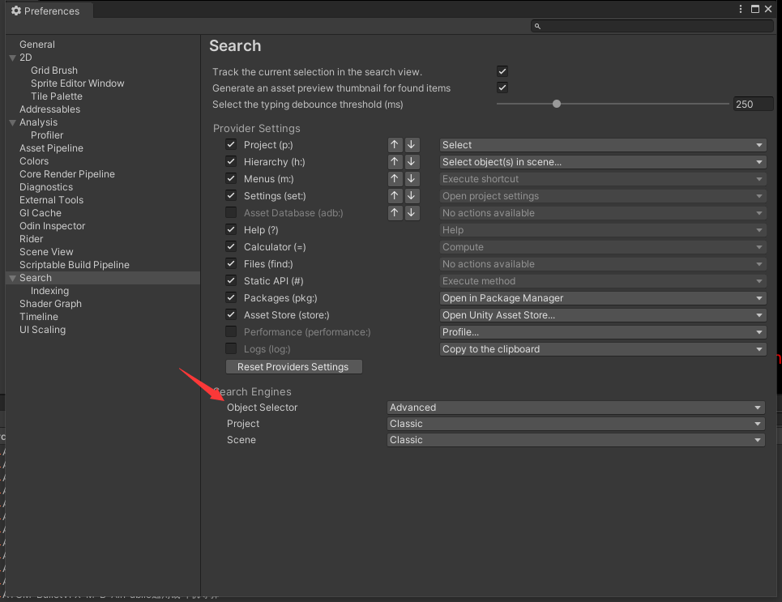
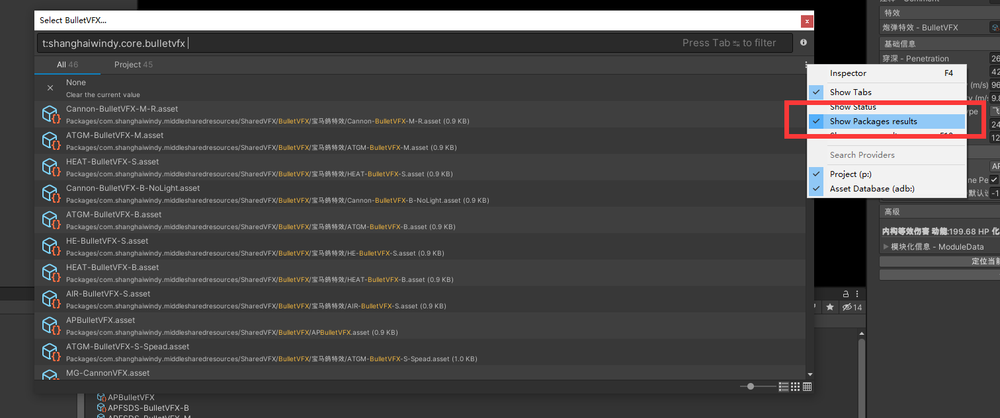

01-1. GetStarted 项目初始化
1. Unity Requirement Unity 准备
Please Install the require game engine to get start! 请安装要求的引擎版本 Unity Engine Requirement Unity 引擎版本要求
2. Software Requirement 软件准备
The following softwares are required:
- git
You can install git from: https://git-scm.com/
需要以下软件
- git
你可以从这里安装 git: https://pc.qq.com/detail/13/detail_22693.html 1. 安装 Git 2. 安装小乌龟
3. Download Mod Project 下载模组项目
Project Link: https://github.com/Doreamonsky/Panzer-War-Lit-Mod/ You can download it by git tool or you can click the blue download button and download ZIP. Unzip the file and you get the mod project. 
项目地址(国内源): https://gitlab.waroftanks.cn/Doreamonsky/panzerwar-mods 在你要保存项目的路径下，长按 shift + 右键 ，点击  复制如下命令到 Powershell 窗口 （要安装好 Git 工具） git clone https://gitlab.waroftanks.cn/Doreamonsky/panzerwar-mods.git 比如我在 H盘文件夹下输入的此命令，则在 H盘目录下将创建一个 PanzerWar-Mods 的文件夹，这个就是我们的模组项目工程。 （若对上述操作不是很明白，可以简单查看下 git 相关操作教程）
4. Open Project In Unity 从 Unity 打开项目
 You have downloaded our mod project in Step.2. Then, open the unity hub and open folder UnityProject in folder PanzerWar-Lit-Mod
你已经在步骤.2 中下载了我们的模组工程。然后，打开 Unity Hub，打开位于文件夹 PanzerWar-Lit-Mod 下的 UnityProject 文件夹
5. Switch picker 切换文件选择器
When the unity opened, you need to change the file picker. The classic picker do not support pick files from package. You need to toggle to new picker.
当项目打开后，你需要修改默认的文件选择器。默认的文件选择器并不支持显示包内的资源，你需要切换到最新的 picker。
 

When using the picker，toggle on Show Package results
在使用 Picker 的时候，勾选 Show Package results


When using the picker，toggle on Show Package results
在使用 Picker 的时候，勾选 Show Package results
6. Finish 结束语
You have finish set up the mod developing environment. You can continue to learn other documents. 你已经完成了模组开发环境的设置，你可以继续其他文档。